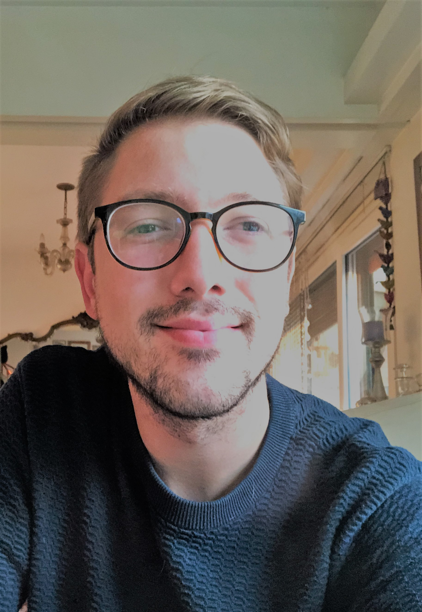

Su di me
Sono un sociologo e professore laureato presso la Universitá di Buenos Aires, motivato e appassionato allo studio e alla ricerca.
Ho lavorato in due agenzie di turismo, dove ho conosciuto ed aiutato persone di tutto il mondo (sono nato in Patagonia, un meraviglioso luogo del mondo da visitare) e anche in due scuole come professore di Storia e Metodologia della ricerca scientifica, sempre nella città di El Calafate (Argentina). Attualmente lavoro come volontario nel processo di archiviazione e digitalizazzione dell'archivio storico del Circolo La Comune.
Negli ultimi anni ho imparato anche diversi linguaggi di programmazione che permettono lo sviluppo di siti e applicazioni web (HTML, CSS, JavaScript, Python) e l'analisi di dati statistici in maniera precisa e affidabile. Il mio desiderio è di poter contribuire nel lavoro di enti, aziende e ONG allo sviluppo attraverso questo tipo di lavoro.
Mi considero una persona socievole, aperta e mi sento sicuro a parlare con la gente, cercando sempre di dare una mano.
Parlo spagnolo, italiano e inglese con fluiditá e sto imparando il tedesco studiando presso l'Istituto Alpha Beta.
Dati Personali
Eta: 30 anni
Luogo di nascita: El Calafate, Patagonia Argentina.
Luogo di residenza: Bolzano, Italia.
Nazionalitá: Argentina/Italiana.
Professione: Sociologo, professore, analista di dati e web developer.